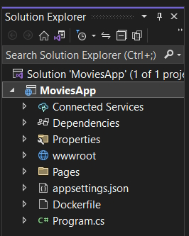
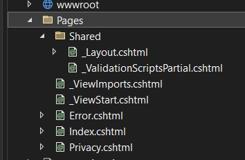

ASP.Net Routing receives the request from the browser to show which Razor Page to trigger (Welcome).
It is going to use the ASP.Net View Engine to locate and render the view so the user can see the result.
When you call the Welcome page Razor Pages is going to search the Pages/Home folder for the Welcome.cshtml and Welcome.cshtml.cs files. Welcome.cshtml.cs is the code behind file which is where all of the logic is placed.
A simple Razor Page code file looks like this.
public class HomeModel : PageModel
{
public void OnGet()
{
}
}
The name of the class must end with Model. In our case HomeModel. We inherit from the PageModel class.
Razor pages have the following features.
Select ASP.Net core web app (search for web app).

Add an project name, location and solution name.
In the next page select the version of .Net you want to use.

Select Authentication if you want to use it.
Check Configure for HTTPS.
Enable Docker if you want to use Docker (use Linux format).
You now have a project with the following format.

wwwroot is where all static content gets added. It has css, js and lib folders which have their specific files. The lib file contains the Bootstrap and jQuery files. css is where you add site specific .css files. js contains the JavaScript files that you write.
You can also create an images folder here for your site images.
The most important folder is the Pages folder and this contains the following.

This is where all of your pages reside. It already has some basic pages.
You have the following pages.
Under each of these pages you have a .cshtml.cs code file.
Also in the Pages folder we have two other files.
Which contains the namespaces and Using statements we want to use throughout the app.
@using MoviesApp
@namespace MoviesApp.Pages
@addTagHelper *, Microsoft.AspNetCore.Mvc.TagHelpers
Shows us where the Layout page is for all of our pages.
@{
Layout = "_Layout";
}
This tells us our layout page is _Layout.cshtml.
The Layout page is in the Shared folder
This contains the formatting for each of our Razor Pages including the navigation bar.
<div class="container">
<main role="main" class="pb-3">
@RenderBody()
</main>
</div>
The most important part of this page being, @RenderBody() and this is where our individual page content is injected.
Also the _Layout.cshtml page contains a code behind page named _layout.cshtml.css file that contains our site styling.
This contains a list of scripts that we include in our site.
<script src="~/lib/jquery-validation/dist/jquery.validate.min.js"></script>
<script src="~/lib/jquery-validation-unobtrusive/jquery.validate.unobtrusive.min.js"></script>
In the root folder there are a couple of other important files.
{
"Logging": {
"LogLevel": {
"Default": "Information",
"Microsoft.AspNetCore": "Warning"
}
},
"AllowedHosts": "*"
}
This is where we add the connection string settings and app secrets settings, etc.
Is the most important file in our project because the application starts from this file.
namespace MoviesApp
{
public class Program
{
public static void Main(string[] args)
{
var builder = WebApplication.CreateBuilder(args);
// Add services to the container.
builder.Services.AddRazorPages();
var app = builder.Build();
// Configure the HTTP request pipeline.
if (!app.Environment.IsDevelopment())
{
app.UseExceptionHandler("/Error");
// The default HSTS value is 30 days. You may want to change this for production scenarios, see https://aka.ms/aspnetcore-hsts.
app.UseHsts();
}
app.UseHttpsRedirection();
app.UseStaticFiles();
app.UseRouting();
app.UseAuthorization();
app.MapRazorPages();
app.Run();
}
}
}
We can add services to our application in this section. You can see that we are running the Razor Pages service.
// Add services to the container.
builder.Services.AddRazorPages();
You can configure HTTPS for production.
// Configure the HTTP request pipeline.
if (!app.Environment.IsDevelopment())
{
app.UseExceptionHandler("/Error");
// The default HSTS value is 30 days. You may want to change this for production scenarios, see https://akms/aspnetcore-hsts.
app.UseHsts();
}
We can request the HTTP requests are sent to HTTPS with.
app.UseHttpsRedirection();
We can serve static content (images, css, etc) in our project with.
app.UseStaticFiles();
To use routing.
app.UseRouting();
This allows the page to be served from within the pages folder.
We allow Razor Pages to be served with.
app.MapRazorPages();
This is used to configure the end-point routing for the Razor Pages.
The last line runs our application.
app.Run();
Razor Pages (or content pages) are intended to be browsable and contain a mixture of client-side and server-side code.
Razor Pages are decorated with the @page directive. This specifies that it's a Razor page.
For each page we also have a @model directive that specifies the model used on the page.
We also have Razor page code blocks encased in @{ ... }. This is where you can write your C# code.
To pass data from a page to a model we are going to use model binding.